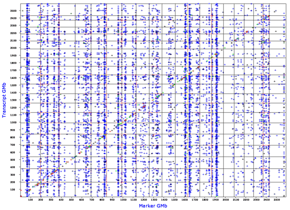

The key concept behind GenomeGraph is simple: expression of traits among individuals is highy variable, even when raised in the same environment and treated in the same way. Some individuals (strains or cases) will have high endogenous expression whereas others will have low or intermediate expression. Systematic difference among individuals is often generated by genetic differences (polymorphisms) that have segregated among different members of a genetic reference population (GRP) such as the BXDs mouse recombinant inbred strains or the HXB/BXH rat recombinant strains.
The chromosomal locations of the allelic variants and gene polymorphisms that cause these differences can be determined using standard mapping methods such as those exploited in the WebQTL module of GeneNetwork. The methods used to find these upstream modulators are collectively called QTL mapping. A gene may have sequence variants in its promoter or enhancer that influence the expression or stability of its own transcripts. If this is the case, then the position of the QTL will coincide with the location of gene from which the transcript is synthesized. QTLs that have a location that closely matches the location to the gene of origin are called cis-QTLs. This does not constitute formal proof that the variant is in the gene or its promoter, but it is a matter of reasonable inference and likelihood. A window of +/- 5 Mb seems reasonable to define a cis-QTL, because this window is only 1/250th the size of the entire genome in most mammals.
Endogenous variation in mRNA or protein level may also be influenced by upstream control loci, for example, transcription factors that happen to differ in sequence or expression level between parental lines. In this case, the location of the QTL will typically be located far from the gene of origin of the message or protein. QTLs of this type are said to be "in trans" or trans-QTLs. (Note that this use of cis and trans differs from the classical use in phage genetics.) Certain trans-QTLs appear to have remarkably widespread effects, and modulate the steady-state abundance of hundreds or even thousands of transcripts. Such master modulators give rise to a feature in GenomeGraph output plots that we informally call transbands.
GenomeGraph generates output that plots the locations of QTLs that modulate an entire transcriptome. For example, the Affymetrix M430 2.0 mouse array provides 45,000 estimates of the steady-state expression of transcripts (probe set estimates). Each of of these probe set traits has been mapped across the entire genome and the results have been stored in a database table. The x-axis plots the location of the QTL and is similar to the many plots generated by WebQTL. However, the y-axis does not plot the LRS value. Instead the y-axis plots the dependent variable for each transcript or protein: namely, the location of its gene of origin. A cis-QTL will generate a point on the diagonal of these plots.

Example of the GenomeGraph output for the Mouse BXD Brain U74Av2 Heritability Weight Transform (HWT) database. The false discovery rate (FDR) parameter was set at a value of 1 (most permissive and highest error rate). There is a particular prominent vertical band of transcripts that are all modulated by an interval centered at about 65 Mb on chromosome 1 (far left). This is the putative Mtap2 transband first discovered by Chesler, Lu and colleagues (2005) in forebrain of the BXD GRP. The cis-QTL diagonal is less prominent at this FDR setting, but replotting with an FDR of 0.1 will highlight this constant feature of all GenomeGraph plots.
GenomeGraph relies on large files in which we have collected data for the QTLs that control all transcripts in a particular data set. We have collected information on locations in the genome that are responsible for generating variation in steady state titres of mRNA species. The y-axis marks the physical locations of parent genes from which mRNA is synthesized. In contrast, the x-axis plots the locations of the highest LRS values associated with each transcript; in essence, the location of the best QTL.
The plots currently a single major parameter that you can vary called the false discovery rate (FDR). The FDR can be tuned from 1, in which case QTLs will be show for every transcript, even those that are highly likely to be false signals, down to values between 0.1 and 0.01, in which case only those one in ten to one in 100 of the QTLs are likely to be false discoveries.
Please note that many of these data sets are still being computed. You may encounter a message that reads Database calculation is not finished.. The older databases such as the mouse BXD U74Av2 data sets and rat HXB RAE230A data sets are available.
Similarly, GenomeGraph plots can only be generated when each trait is linked to a particular a gene. This is straightforward for both genes and many proteins. If you select a classical trait database such as one of the Phenotype databases you will encounter this error message: >I>Sorry, this database cannot be used with this GenomeGraph plot type.
For a more information on the scientific context of this work please see Chesler, Lu and colleagues (2005).
This text by RW Williams, Oct 2005.